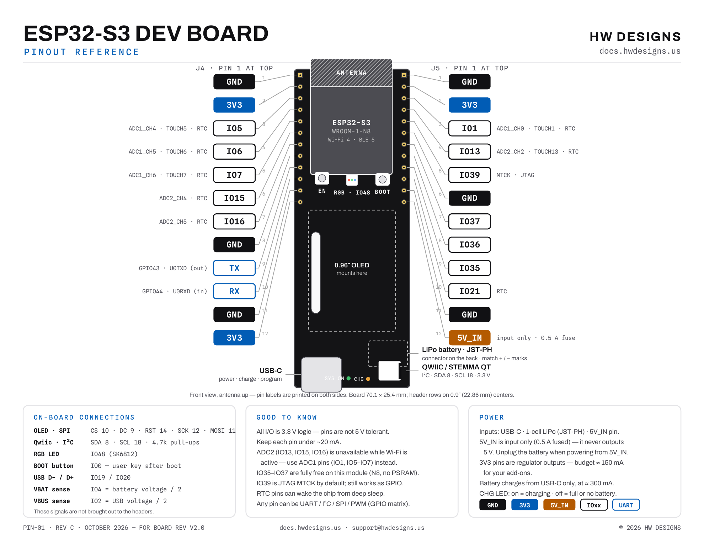

At a glance
The key numbers
Board revision V2.0. Battery and charging figures are measured on V2.0 boards.
Also on the board: Qwiic / STEMMA QT (I²C) connector, 2×12 header pins, addressable RGB LED, BOOT and EN buttons.
Getting started
From the box to your first upload
The board arrives ready to use — no soldering, no drivers. Steps 1–2 get the built-in demo online; steps 3–4 set you up to write your own code.
-
Plug it in
Connect the board to any USB‑C charger or computer port. It powers up and starts the built-in Weather Clock on the OLED display.
-
Put it on your Wi‑Fi
On first boot the board creates its own Wi‑Fi network called HW‑WeatherClock. Join it from your phone and a setup page opens (or go to
192.168.4.1). Pick your home network, enter its password and your location, and choose °F or °C. Your local time and weather appear on the display.The board uses 2.4 GHz Wi‑Fi. If your router broadcasts separate 2.4 GHz and 5 GHz names, choose the 2.4 GHz one.
Setup details
Location: country, state or province, and city. A ZIP or postal code works in the city field, or type
latitude, longitudeinstead. The board looks the place up and shows what it found. If it can’t find the place, the setup page opens again so you can correct it.RGB LED: tinted by the temperature outside.
BOOT button: a short press shows an info page (location, firmware version, IP address, battery). To change Wi‑Fi or location later, hold BOOT for 3 seconds.
-
Set up the Arduino IDE
Install the free Arduino IDE, then open File → Preferences and paste this into Additional boards manager URLs:
https://espressif.github.io/arduino-esp32/package_esp32_index.jsonOpen Tools → Board → Boards Manager, search for
esp32, and install esp32 by Espressif Systems, version 3.3.6. Then pick ESP32S3 Dev Module under Tools → Board.Arduino settings
Match these settings under Tools:
Board ESP32S3 Dev Module USB CDC On Boot Enabled Flash Size 8MB (64Mb) Partition Scheme 8M with spiffs (3MB APP/1.5MB SPIFFS) Stay on version 3.3.6 of the board package: versions 3.3.7–3.3.10 have a Bluetooth bug.
No driver install is needed — the board uses the ESP32‑S3’s native USB, which Windows 10/11, macOS, and Linux recognize out of the box.
-
Upload your first sketch
Select the board’s port under Tools → Port, paste this in, and click Upload. The onboard LED cycles red, green, blue:
#define RGB_PIN 48 // onboard RGB LED void setup() {} void loop() { neopixelWrite(RGB_PIN, 40, 0, 0); delay(400); // red neopixelWrite(RGB_PIN, 0, 40, 0); delay(400); // green neopixelWrite(RGB_PIN, 0, 0, 40); delay(400); // blue }If the port doesn’t appear or the upload won’t start: use a data-capable USB‑C cable, or hold the BOOT button while plugging the board in, then try again.
-
Keep going
Take the board tour below, grab the pinout diagram and user guide, then build something from the example projects — including the full source of the Weather Clock your board shipped with.
Board tour
Know your board
Both sides, and what everything on them does. Photos show a V2.0 board, with the OLED display fitted on the front.
Front
What’s on the front
- ESP32‑S3 module up top — its antenna end sticks out past the board; keep it clear of metal.
- EN (reset) and BOOT buttons, with the RGB status LED between them.
- USB‑C for power, charging, and programming.
- CHG and SYS ON indicator LEDs by the USB port.
- Qwiic / STEMMA QT connector (JST‑SH 4‑pin) for solder-free I²C sensors.
- Pin names printed beside every header pin, so you can wire it up without flipping the board.
Back
What’s on the back
- Every header pin labeled on the back too — power (3V3, GND, 5V_IN), GPIO numbers, and TX/RX.
- 30‑pin ribbon connector for the OLED display.
- LiPo battery connector (JST‑PH 2.0 mm) with polarity marked + / −.
- Board revision code printed along the edge (
EE202603Bon V2.0) — include it when you contact support.

70.1 × 25.4 mm (2.76″ × 1.00″) · ≈76.4 mm incl. antenna overhang · 0.1″ header pitch, breadboard friendly · Designing an enclosure? Download the 3D model (STEP)
Tips: display ribbon, Wi‑Fi range, batteries
The display ribbon
The 0.96″ OLED sits on the front; its ribbon cable passes through the slot to the connector on the back.
Best Wi‑Fi range
Let the antenna end hang over the edge of your breadboard or enclosure. Metal, batteries, and hands near the antenna end reduce range.
Before you plug in a battery
Use a single-cell 3.7 V LiPo (600 mAh or larger) with a JST‑PH 2.0 mm plug and match the + / − marks on the board. Battery lead polarity is not standardized between vendors — check every new battery.
Downloads
Documents & references
| Document | What it covers | File |
|---|---|---|
| Spec sheet | Full V2.0 specifications, pinout and power figures (printable) | open ↗ · spec-sheet.pdf |
| Schematic | Full board schematic (V2.0) | schematic.pdf |
| User guide | Setup, features & troubleshooting | user-guide.pdf |
| Pinout diagram | Printable pin reference | pinout.pdf |
| 3D model | Exact V2.0 board geometry for enclosures & mounts | 3D.step |
| Bill of materials | Every part on the V2.0 board, with manufacturer part numbers | bom.csv |
| ESP32‑S3‑WROOM‑1 datasheet | Official module specifications from Espressif | espressif.com ↗ |
| Demo firmware source | Weather Clock 2.1.6, the sketch your board ships with | GitHub ↗ |
Test data and test tools
| Document | What it covers | File |
|---|---|---|
| V1.0 test report | 120 of 122 tests passed — every test, the power measurements and known issues | open report ↗ |
| V2.0 test report | In progress — battery life, charging and low-battery shutdown results | open report ↗ |
| Battery test data | Full discharge and full charge of a real cell, 10-second averages (CSV) | V1.0 discharge · V1.0 charge · V2.0 discharge · V2.0 charge |
| DVT firmware guide | How to flash & run the DVT firmware pack, for the V1.0 test IDs | guide.docx |
| DVT helper firmware | Serial-menu bring-up & self-test sketch (Arduino) | DVT_Helper.ino |
Missing something? Email us and we’ll send it over.
Example projects
Four ways to start building
Weather Clock
The firmware your board ships with (version 2.1.6). It fetches your local forecast over Wi‑Fi and draws a clock and conditions on the OLED — a full tour of Wi‑Fi, HTTP, JSON, and the display in one sketch.
View source ↗Qwiic sensor in 5 minutes
Plug a Qwiic SHT4x temperature & humidity sensor (not included) into the side connector — no soldering — and chart live readings on the screen.
View source ↗Battery-powered sensor logger
Read a Qwiic SHT4x temperature & humidity sensor (not included), show it on the OLED, then deep‑sleep between readings to stretch battery life.
View source ↗Home Assistant with ESPHome
Make the board a Home Assistant device in a couple of minutes: install the ESPHome configuration (version 1.1.1) straight from your browser, and battery, USB power, the BOOT button and the RGB LED show up as entities while the OLED keeps showing the clock — plus indoor temperature and humidity if you plug in a Qwiic SHT4x sensor (not included).
Set it up →Support
Stuck? We’ll help.
Talk to us
Tell us what you tried and what happened — a photo of your setup helps, and the code printed on the back of the board tells us your exact revision. We read every message.
My computer doesn’t see the board
Use a data-capable USB‑C cable — many bundled cables are charge-only. No drivers are needed on Windows 10/11, macOS, or Linux. If the port still doesn’t appear, hold the BOOT button while plugging the board in, then release it and check again.
Which battery does it take?
A single-cell 3.7 V LiPo, 600 mAh or larger, with a JST‑PH 2.0 mm plug (the socket is on the back). It charges from USB‑C at ≈300 mA and runs the Weather Clock for about 24 hours per 1000 mAh, at about 41 mA (measured on a full discharge).
On battery, the Weather Clock switches the Wi‑Fi radio off between weather updates, so the board is not reachable on your network in between. When the battery runs low it shows “charge me” and goes to sleep; plug in USB‑C to wake it. On-board protection guards against over-charge, over-discharge, over-current, and reverse polarity. Match the + / − marks next to the connector — battery lead polarity varies between vendors.
Which board revision is this page for?
Board revision V2.0 — the code EE202603B is printed along the back edge. The V1.0 prototypes carry the code EE202603A. V2.0 uses a JST‑PH 2.0 mm battery connector (was JST‑XH), charges at ≈300 mA (was ≈200 mA), and adds pin labels on the front. Test results: the V1.0 test report (120 of 122 tests passed) and the V2.0 test report (in progress).